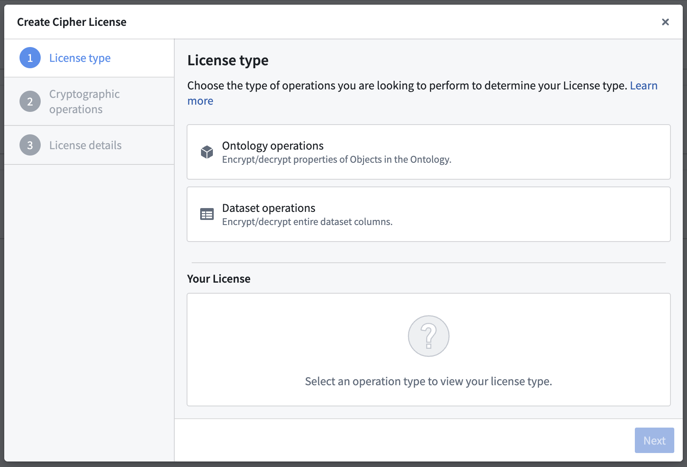
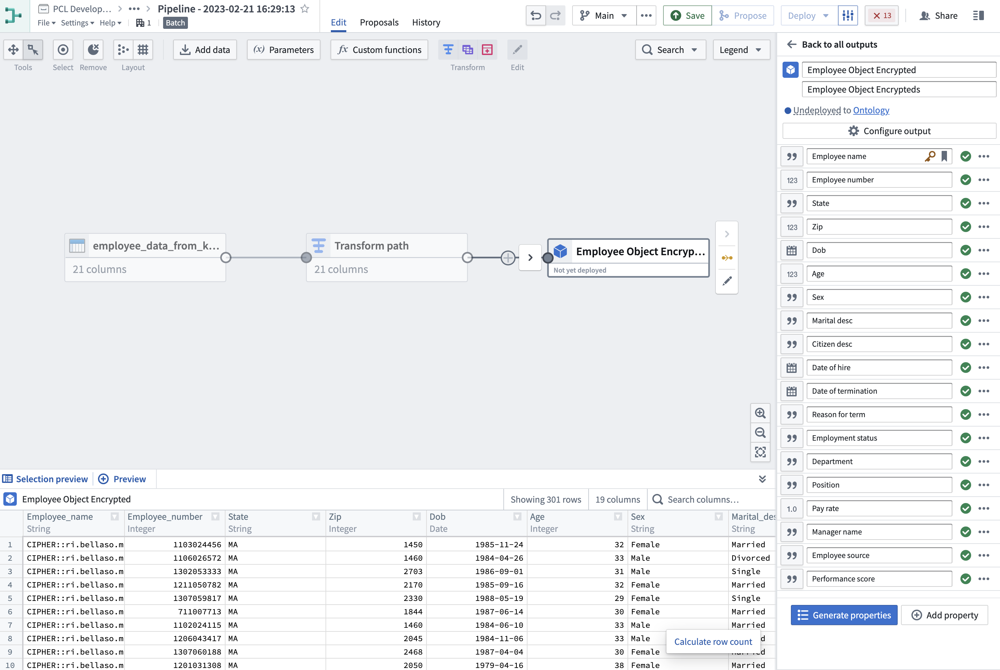
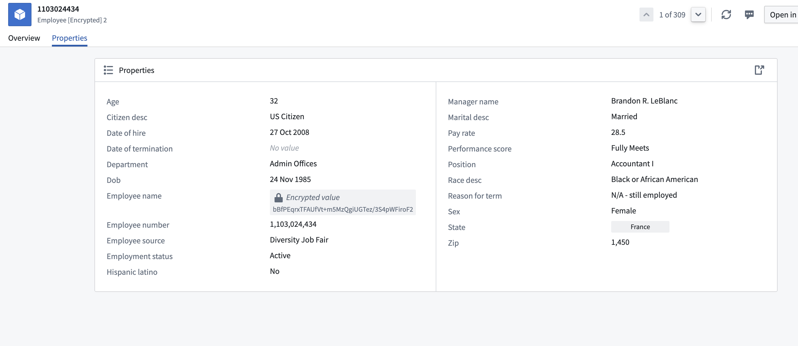
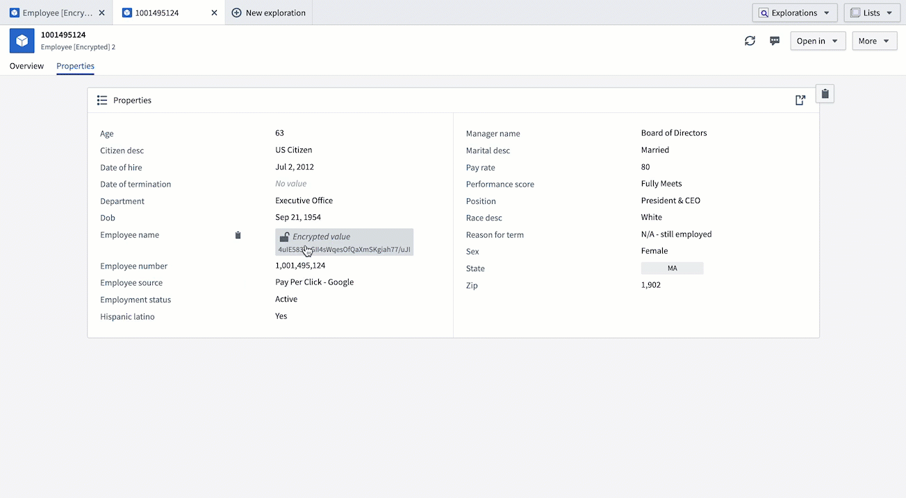

This guide includes the following sections:
When creating a Cipher Channel you will first be asked to choose a cryptographic algorithm before creating a secret. There are two ways to create a new Cipher Channel:
Navigate to the Project of your choice and create a new Cipher Channel by selecting + New > Cipher Channel. Select the algorithm of your choice; we recommend AES_SIV (AES-256-SIV) to perform joins on encrypted values.
:::callout{theme="neutral"} If you do not have the ability to create a Cipher Channel in your Foundry filesystem, contact your Palantir representative for assistance. :::
Navigate to the left side of the panel and look for Cipher under Platform Apps > Data Governance, and follow the same instructions as under Option 1.

The on-screen guide will walk you through the process of creating a Cipher Channel with your desired protocols. The following are additional details that may assist you in deciding which configuration to choose from for your use case:
The key difference between hashing and encryption is that encrypted values can be decrypted if a user has proper permissions, while hashed values cannot be de-obfuscated or re-identified through a cryptographic operation. If your use case requires re-identification, we recommend using encryption.
The key difference between probabilistic and deterministic encryption is the following:
The Visual Obfuscation Image Scrambling algorithm is deterministic and reversible.
Some considerations that should be taken into account when choosing between deterministic and probabilistic algorithms are:
The on-screen guide will walk you through the process of configuring your cryptosystem. Depending on which cryptographic algorithm you previously chose, you will have different secret formats to choose from to protect your sensitive data.
Clicking on Create cipher channel will conclude the Cipher Channel creation process.
To issue Cipher Licenses, navigate to a Cipher Channel and click on the Create New Cipher License button.

:::callout{theme="warning"} To grant a user access to the operations permitted by a Cipher License, give them View access to the License. :::
You can choose between three types of Licenses:
| Operational User License | Data Manager License | Admin License | |
|---|---|---|---|
| Auditable at the cell level | â | â | â |
| Can enforce a rate limit | â | â | â |
| Used to encrypt/decrypt entire columns | â | â | â |
| Effectively grants access to cryptographic keys | â | â | â ï¸ |
| Usable in | |||
| Object Layer (Workshop, Object Explorer, ...) | â | â | â |
| Functions (see bypassing checkpoints) | â | â | â |
| Pipeline Builder | â | â | â |
| Contour | â | â | â |
| Code Authoring | â | â | â |
An Operational User License (formerly "Frontend License") enables Foundry users to encrypt or decrypt individual values.
The two configurable permissions for Operational User Licenses are:
:::callout{theme="neutral"} A rate limit is an optional configuration which indicates the number of single-value cryptographic operations an individual is allowed in the configured time. Should a user exceed the limit, they will be blocked until the period resets. :::
:::callout{theme="neutral"} Operations performed using an Operational User License are fully auditable. :::
Allowing a license to bypass checkpoints means the license can be used in places where checkpoints cannot be shown, such as Functions or a direct API call. Use of this license is still auditable at the cell level and rate-limited.
A Data Manager License (formerly "High Trust License") enables Foundry users to encrypt or decrypt entire columns of datasets using tools such as Pipeline Builder and Contour. This configuration can be helpful for users who benefit from point-and-click tools, as well as users with strict security concerns. Learn more about using Cipher in Pipeline Builder.
The two configurable permissions for Data Manager Licenses are:
An Admin License (formerly "Transforms License") enables Foundry users to encrypt or decrypt entire columns of datasets in Code Repositories and grants them access to the cryptographic keys.
:::callout{theme="warning"} Allowing operations in Transforms effectively grants users access to the cryptographic keys. Ensure that access to this License is only granted to users with elevated permissions. :::
The two configurable permissions for Admin Licenses are:
Once you have familiarized yourself with the steps above, refer to this tutorial to walk you through the process on how to use the Cipher application to perform encryption actions.
:::callout{theme="neutral"} This tutorial uses notional employee data. All information shared in this documentation such as but not limited to images and accompanying datasets are notional. :::
Before you begin, download the notional employee dataset and upload it to Foundry.
Cipher encrypt transform using the Data Manager License you just created and apply it on the Employee_name column of the dataset. The column should now be encrypted. Once encryption is complete, you can add an Object type pipeline output with your dataset and use Employee_number as the primary key and title. (Learn more about Pipeline Builder)
Pipeline outputs. Select the Target ontology and the Output folder and Save. Upon accessing any object within this dataset, you will notice the set of values you previously encrypted is now rendered inaccessible and cannot be viewed. The next step will provide instructions on how to decrypt these values.
